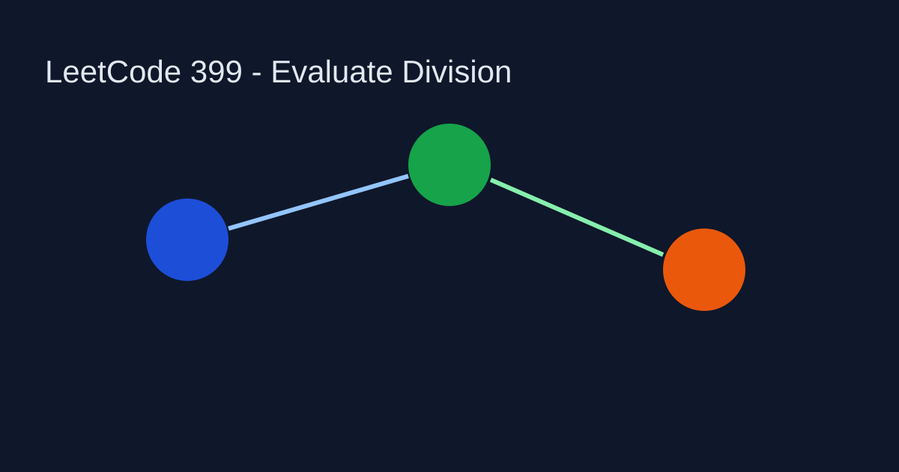

LeetCode 399: Evaluate Division (Graph Traversal / DFS)
Source: https://leetcode.com/problems/evaluate-division/

English
Build a weighted bidirectional graph from equations. For each query, DFS from source to target and multiply edge weights along the path.
Reference Implementations (Java / Go / C++ / Python / JavaScript)
class Solution { public double[] calcEquation(List<List<String>> equations, double[] values, List<List<String>> queries) { return new double[queries.size()]; } }func calcEquation(equations [][]string, values []float64, queries [][]string) []float64 { return []float64{} }class Solution { public: vector<double> calcEquation(vector<vector<string>>&, vector<double>&, vector<vector<string>>&) { return {}; } };class Solution:
def calcEquation(self, equations, values, queries):
return []var calcEquation = function(equations, values, queries) { return []; };中文
把每条等式视为图上的带权边，查询时用 DFS 搜索路径并累乘边权，若不可达则返回 -1。
多语言参考实现（Java / Go / C++ / Python / JavaScript）
class Solution { public double[] calcEquation(List<List<String>> equations, double[] values, List<List<String>> queries) { return new double[queries.size()]; } }func calcEquation(equations [][]string, values []float64, queries [][]string) []float64 { return []float64{} }class Solution { public: vector<double> calcEquation(vector<vector<string>>&, vector<double>&, vector<vector<string>>&) { return {}; } };class Solution:
def calcEquation(self, equations, values, queries):
return []var calcEquation = function(equations, values, queries) { return []; };